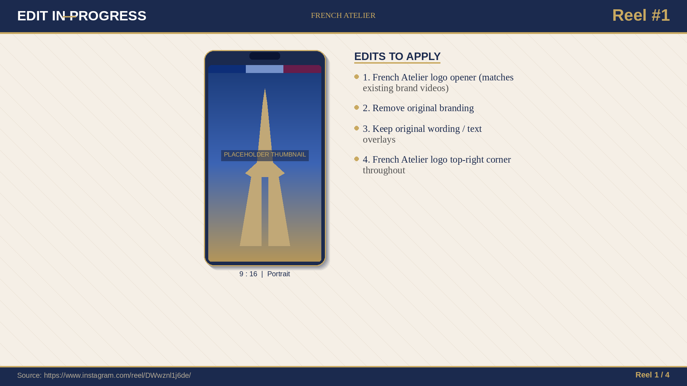
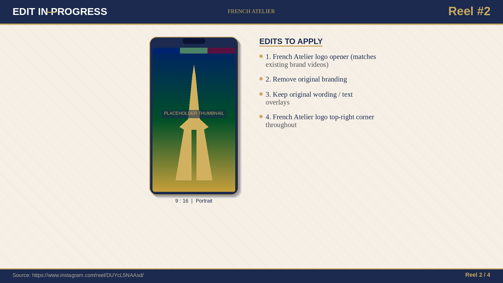
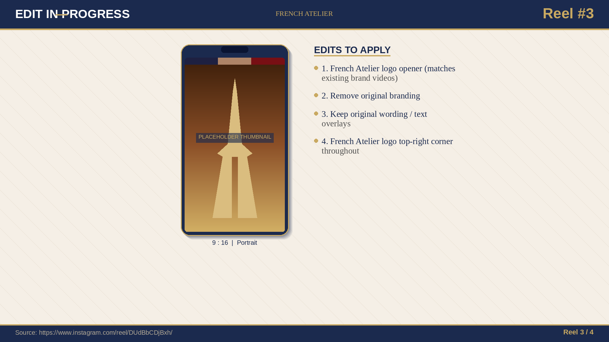
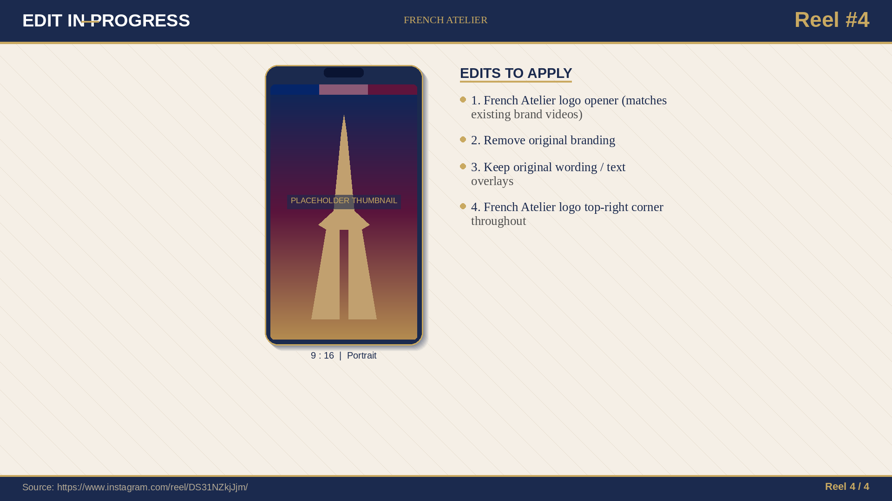

CEO Marketing
Review.
From 1.9 → 2.5 weekly ROI. Organic · paid · email · Bastille Day.
Agenda
- 01Paid media — 2 new cuts · CPL $13.40
- 02Organic — all 22 Drive videos + 4 French Beauty Reels
- 03Thought leadership — 60 Quora/Reddit · 30 emails · new website
- 04Bastille Day — Win a Trip to France
- 05The ask — 1.9 → 2.5 weekly ROI
Paid Media
2 new cuts · CPL down to $13.40 · Charline masterclass
What changed in May–June 2026
We replaced broad-interest targeting with lookalikes of converters, shipped two new cuts of Charline's Paris masterclass, and tightened ad-to-landing-page scent. CPL dropped from $19.80 to $13.40 while spend held flat.
Cut A — The Masterclass hook
Join Charline live from Paris for an exclusive masterclass.
#LearnFrench #FrenchAtelier
Cut A · 30s · Masterclass-led hook · live-from-Paris framing · highest CTR variant.
Cut B — The in-class reframe
Charline mid-class — the real teaching moment that converts.
#LearnFrench #FrenchAtelier
Cut B · 25s · In-class authenticity · strong mid-funnel performer · lower CPM, higher dwell-time.
The 20% of moves that drove 80% of the CPL drop
CPL reduction
CPL down 32% in 8 weeks · target: maintain ≤ $14 with 2 additional cuts in late June.
Organic — French Graphic Words
All 22 Drive videos · TikTok · Reels · Meta Feed
French Graphic Words — what & why
Short, captioned French-language videos around two recurring concepts: Homonymes (same sound, different word) and Formel vs Parlé (textbook French vs how Paris actually speaks).
USA 35–70 francophiles. They love French culture but feel their textbook French is "wrong" in real conversation. We close that gap in 30 seconds.
Native posts on @frenchatelier · TikTok, Instagram Reels and Meta Feed (paid amplification on the top 5 performers).
25% of all leads from organic · target net follower add +15K across IG / TikTok by end of Q3.
TikTok placements (1–2 of 15)
TikTok placements (3–4 of 15)
TikTok placements (5–6 of 15)
TikTok placements (7–8 of 15)
TikTok placements (9–10 of 15)
TikTok placements (11–12 of 15)
TikTok placements (13–14 of 15)
TikTok placements (15–15 of 15)
Instagram Reels placements (1–2 of 7)
Instagram Reels placements (3–4 of 7)
Instagram Reels placements (5–6 of 7)
Instagram Reels placements (7–7 of 7)
Meta Feed — paid amplification
Verlan, slang, and the real Paris.
#LearnFrench #FrenchAtelier
Meta Feed — paid amplification
Drop the 'ne' — sound native.
#LearnFrench #FrenchAtelier
Meta Feed — paid amplification
The 5 contractions Parisians live by.
#LearnFrench #FrenchAtelier
Organic — French Beauty
4 IG Reels · in production · post-meeting delivery
A second viral pillar — French Beauty
Four French Beauty Reels currently being re-edited to French Atelier brand. These complement the language-focused content and target the aspirational lifestyle layer of our audience — Parisian elegance, ritual, restraint.
Matches the brand opener used in Homonyms / Formal-vs-Spoken series.
Original creator marks, watermarks and end-cards removed.
On-screen captions preserved verbatim — they're already optimised.
Persistent French Atelier mark · small, navy, transparent.
Le rituel matinal

- Logo opener (same as language reels)
- Watermark stripped
- Captions preserved verbatim
- Persistent FA mark, top-right
La beauté discrète

- Logo opener (same as language reels)
- Watermark stripped
- Captions preserved verbatim
- Persistent FA mark, top-right
Le parfum à 5h

- Logo opener (same as language reels)
- Watermark stripped
- Captions preserved verbatim
- Persistent FA mark, top-right
La peau sans maquillage

- Logo opener (same as language reels)
- Watermark stripped
- Captions preserved verbatim
- Persistent FA mark, top-right
Thought Leadership — Quora & Reddit
Full 60-post content slate · 6 personas · evergreen SEO + AI Overview assets
Why this channel matters
Quora and Reddit are the high-intent surfaces for adults researching how to learn French. Our 60-post slate seeds the search graph with persona-matched answers — every post is a search-engine and AI-Overview asset for years.
Long-form, expert-voiced, written from the founder/teacher seat. Each maps to a single decision-stage question.
r/languagelearning · r/French · r/learnfrench · r/AskOldPeople · r/travel. First-person, story-led, no sales-y tone.
One voice per persona · consistent across both platforms · adapted from the Rosen Hebrew framework.
3 posts/week · 20 weeks · staffed by content lead + 2 native writers.
Six personas · one French Atelier
Quora answers — mockups
Quora answers — mockups
Quora answers — mockups
Quora answers — mockups
Quora answers — mockups
Quora answers — mockups
Quora answers — mockups
Quora answers — mockups
Quora answers — mockups
Quora answers — mockups
Quora answers — mockups
Quora answers — mockups
Quora answers — mockups
Quora answers — mockups
Quora answers — mockups
Reddit posts — mockups
Reddit posts — mockups
Reddit posts — mockups
Reddit posts — mockups
Reddit posts — mockups
Reddit posts — mockups
Reddit posts — mockups
Reddit posts — mockups
Reddit posts — mockups
Reddit posts — mockups
Reddit posts — mockups
Reddit posts — mockups
Reddit posts — mockups
Reddit posts — mockups
Reddit posts — mockups
Thought Leadership — Email
30 emails · 90-day flow · cheapest ROI lever
Where email fits
Email is the cheapest ROI lever we have. We're launching 4 flows targeting the four highest-leverage moments: first touch, free-assessment follow-up, 60-day dormants, and the Bastille campaign.
All 30 emails · 90-day flow
| # | Day | Pillar | Subject line | Status |
|---|---|---|---|---|
| #1 | Day 0 | WELCOME | Bienvenue — your French starts here | draft |
| #2 | Day 1 | WELCOME | Meet your teacher — live from France | draft |
| #3 | Day 3 | WELCOME | The 4-minute placement test | draft |
| #4 | Day 5 | WELCOME | Why we teach in groups of 8 (not 1) | draft |
| #5 | Day 7 | WELCOME | What a French Atelier class actually looks like | draft |
| #6 | Day 14 | ART OF LIVING | The Six Pillars — why we teach French this way | draft |
| #7 | Day 21 | ART | Why your French teacher should know Monet | draft |
| #8 | Day 25 | SOUL | The French don't say "I miss you" | ✓ sent |
| #9 | Day 28 | TASTE | How to order a coffee in Paris (without embarrassing yourself) | ✓ sent |
| #10 | Day 32 | STYLE | What French cinema taught us about silence | ✓ sent |
| #11 | Day 35 | SOUL | On June 21st, all of France sings | ✓ sent |
| #12 | Day 39 | ART | You already speak more French than you think | ✓ sent |
| #13 | Day 42 | TASTE | The French word for hunger has three meanings | draft |
| #14 | Day 46 | STYLE | Why Parisian women say less | draft |
| #15 | Day 49 | SOUL | The unsent letter — a Proust passage we love | draft |
| #16 | Day 53 | ART | Three French painters who never left their region | draft |
| #17 | Day 56 | TASTE | The market in Lyon at 8am | draft |
| #18 | Day 60 | STYLE | What a Parisian wears to a wedding (it's not what you think) | draft |
| #19 | Day 63 | SOUL | The single French expression that defines friendship | draft |
| #20 | Day 67 | ART | Why French film has no Hollywood ending | draft |
| #21 | Day 70 | ART OF LIVING | The slow Sunday — France's quietest ritual | draft |
| #22 | Day 74 | TRIAL | Your free 20-minute advisor call — book it | draft |
| #23 | Day 78 | TRIAL | What a 12-week cohort actually changes | draft |
| #24 | Day 82 | TRIAL | Charline answers your most asked question | draft |
| #25 | Day 86 | TRIAL | Your seat in the July cohort — held until Friday | draft |
| #26 | Day 90 | TRIAL | Last call — July cohort closes tonight | draft |
| #27 | Day 150 | REACTIVATION | Your French is still here. We saved your seat. | draft |
| #28 | Day 160 | REACTIVATION | Three students who came back after a year (and what changed) | draft |
| #29 | Day 170 | BASTILLE | Win a long weekend in Paris — drawn live July 14 | draft |
| #30 | Day 172 | BASTILLE | Last 48 hours — Bastille trip draw closes Sunday | draft |
Gmail inbox — as the subscriber sees it
Gmail inbox — as the subscriber sees it
Gmail inbox — as the subscriber sees it
Gmail inbox — as the subscriber sees it
Gmail inbox — as the subscriber sees it
Gmail inbox — as the subscriber sees it
The French don't say "I miss you"
They say tu me manques — you are missing from me.
Read that again. The English version puts you in charge of the feeling. The French version says the feeling arrives on its own, and the other person is the cause of it. One is an action. The other is a quiet admission.
That single grammatical flip changes how love is spoken.
There are more.
Avoir le cafard — to have the cockroach. It means to be quietly down, the kind of mood that crawls into a corner of your day and stays there.
Dépaysement — the feeling of being pleasantly unmoored. There is no English word for it because English-speaking life rarely names the in-between.
This is what we teach at French Atelier. Not vocabulary lists. The shape of a worldview.
You stop translating. You start thinking in French.
À bientôt,
The French Atelier
How to order a coffee in Paris (without embarrassing yourself)
"Un café, s'il vous plaît" — gets you the same espresso a tourist gets.
"Je prendrais un café" — sounds slightly off.
"Un petit café — merci" — lands you in the Paris of locals.
The trick isn't vocabulary. It's the diminutive — un petit — the French way of making any request smaller, softer, less imposing. It signals you understand the room.
Three more phrases inside that mark you as someone who lives here — not someone passing through.
À bientôt,
The French Atelier
What French cinema taught us about silence
Pierrot le Fou, 1965. Belmondo and Karina are in a car, in silence, for almost a full minute. They say nothing. The French audience hears everything.
We translated the scene. The English barely survives — because English fills silence with words, and French lets silence say what words can't.
This is what we teach. Not just the language. The cultural permission to leave things unsaid.
Watch the scene inside.
À bientôt,
The French Atelier
On June 21st, all of France sings
It's not a festival. It's a national agreement to play music for free, anywhere, all night.
Here is the thing French Atelier teaches that nobody tells you about France: the language was built for nights like this. Faire la fête. Tomber sur quelqu'un. L'ambiance. There are words for every texture of a shared evening.
Three of them inside — with the French you'll need to be part of the night, not a tourist watching it.
À bientôt,
The French Atelier
You already speak more French than you think
Twenty English words you use weekly that are pure French.
What this means is simple: your ear is already tuned to French rhythm. Your tongue knows the soft vowels. The work isn't starting from zero. The work is recognising what's already there — and giving it the structure to grow.
That's what live classes do. That's why we teach French this way.
À bientôt,
The French Atelier
Thought Leadership — New Website
frenchatelier.com · live screen recording · AI SEO shipped
A site rebuilt for adults who buy
The previous site sold a feature list. The new site sells a feeling — France itself, told through the Six Pillars (Language, Art, Gastronomy, Film, Fashion, Music & Poetry). Built clean for AI Overviews and answer engines.
frenchatelier.com — 60-second auto-scroll
Full home → courses → teachers → pricing scroll capture · visit live site
Built for AI Overviews
Bastille Day
Win a Trip to France · July 14 · follower-acquisition campaign
Win a trip
to France.
Follow · Tag · Win.
Drawn live July 14, 8pm Paris time.
Campaign mechanics
The Ask
From 1.9 → 2.5 weekly ROI · three levers · one quarter
From 1.9 to 2.5
Three levers · one quarter
Speak, read,
and live French.
From France.